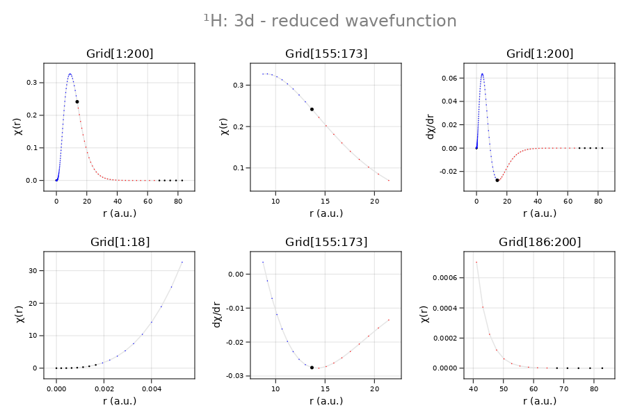
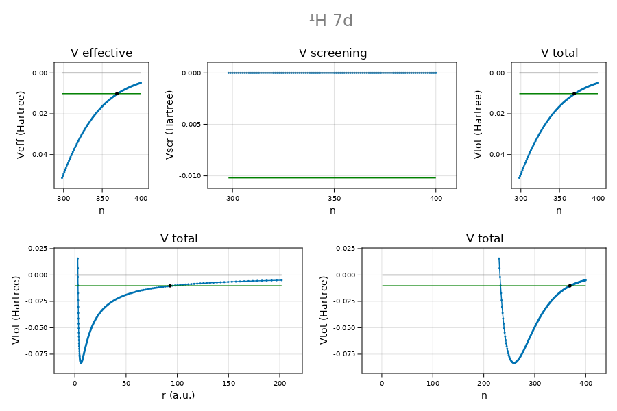

Home
CamiXon.jl is a Julia package for the numerical solution of the radial Schrödinger equation allowing for screening.
Install
The package is installed using the Julia package manager
julia> using Pkg; Pkg.add("CamiDiff")
julia> using CamiDiffIntroduction
In CamiXon the solution of the radial Schrödinger equation is obtained for a single electron, acting as a spectator in the central field of the atomic nucleus screened by 'the other' electrons (the screening electrons).
The starting point is the 1D Schrödinger equation,
\[\tilde{χ}_{l}^{′′}+2[Z_{\mathrm{eff}}(ρ)/ρ-l(l+1)/2ρ^{2}+ε_{l}]\tilde{χ}_{l}=0,\]
where $\tilde{\chi}_{l}(\rho)=\rho\tilde{R}_{l}(\rho)$ is the reduced radial wavefunction and $ε_{l}=-κ _{l}^{2}$ is the corresponding binding energy in Hartree atomic units (a.u.). As compared to the hydrogenic case, the atomic number $Z$ has been replaced by $Z_{\mathrm{eff}}(ρ)$, the effective nuclear charge at radial distance $ρ$ from the atomic center (in a.u.). In other words, the energy of the electron in the Coulomb field of the nucleus is replaced by an effective, central field potential of the form
\[U_{\mathrm{CF}}(ρ)=-Z_{\mathrm{eff}}(ρ)/ρ=-Z/ρ+U_{\mathrm{scr}}(ρ),\]
consisting of the bare Coulomb contribution, $-Z/ρ$, and the screening field $U_{\mathrm{scr}}(ρ)$, subject to the boundary conditions $U_{\mathrm{scr}}(0)=Z$ and $\mathrm{lim}_{ρ→\infty}U_{\mathrm{scr}}(ρ)=Z_{c}/ρ$. Here $Z_{c}$ is the Rydberg charge; i.e. the effective nuclear charge for a spectator electron in the far field $(ρ→\infty)$. Within these assumptions we can optimize $U_{\mathrm{scr}}(ρ)$, while preserving the bare Coulomb field close to the nucleus as well as the Rydberg potential in the far field. The price we pay is that the radial Schrödinger equation has to be solved numerically by radial integration. Our strategy is to use both inward and outward integration and match the two branches by equating the two solutions for the wavefunction, $χ(ρ)$, and its derivative, $χ^′(ρ)$, at a point near the classical turning point of the radial motion of the electron. The basics of the solution can be found in the book Atomic Structure Theory by Walter R. Johnson.
Illustration: the hydrogen 3d orbital
Shown below are the reduced radial wavefunction $(χ)$ and its derivative $(χ^′)$ in the near field (left), the far field (right), and in the region near the classical turning point (center).

Illustration: central field potential $U_{\mathrm{CF}}$ versus grid index
codata = castCodata(2018)
atom = castAtom(Z=1, A=1, Q=0)
orbit = castOrbit(n=7, ℓ=2)
grid = autoGrid(atom, orbit, Float64)
def = castDef(grid, atom, orbit, codata)
E = convert(grid.T,bohrformula(atom.Z, orbit.n))
adams = castAdams(E, grid, def)
@printf "E = %.15g %s \n" E "Hartree"
Element created: H, hydrogen, Z=1, weight=1.008
Isotope created: ¹H, hydrogen, Z=1, A=1, N=0, R=0.8783, M=1.007825032, I=1/2⁺, μI=2.792847351, Q=0.0, RA=99.9855%, (stable)
Atom created: hydrogen, neutral atom, ¹H, Z=1, A=1, Q=0, Zc=1
Orbital: 7d
principal quantum number: n = 7
radial quantum number: n′ = 4 (number of nodes in radial wavefunction)
orbital angular momentum of valence electron: ℓ = 2
CamiDiff.Grid created: exponential, Float64, rmax = 207.0 a.u., N = 400, h = 0.025, r0 = 0.00939821
Def created for hydrogen 7d on exponential grid of 400 points
E = -0.0102040816326531 Hartree
plot_potentials(E, grid, def)
Nlctp = 234, Nmin = 259, Nuctp = 369 (Ructp = 93.0059202490 a.u.)The plot is made using CairomMakie. NB.: plot_potentials is not included in the CamiXon package. 